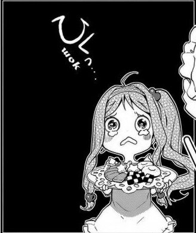

Здесь должна получится трехколоночная красивая Адаптивная верстка
Мобильная одноколоночная верстка

О себе:
Клочев Василий Сергеевич. 1989 года родждения.
Высшее образование. Специальность: «Системный программист, математик»
Я буду писать здесь некий текст, не проверяя его на арфографические и грамматические ошибки, так как это не важно, ведь мне просто нужно построить несколько конструкций из орфографических знаков. Например: «Вот такую», или (может быть) как-нибудь, вот так вот как-то. И все это, чтобы проверить будет ли работать подключенный типографический преобразователь
Клочев Василий Сергеевич. 1989 года родждения.
Высшее образование. Специальность: «Системный программист, математик»
Я буду писать здесь некий текст, не проверяя его на арфографические и грамматические ошибки, так как это не важно, ведь мне просто нужно построить несколько конструкций из орфографических знаков. Например: «Вот такую», или (может быть) как-нибудь, вот так вот как-то. И все это, чтобы проверить будет ли работать подключенный типографический преобразователь